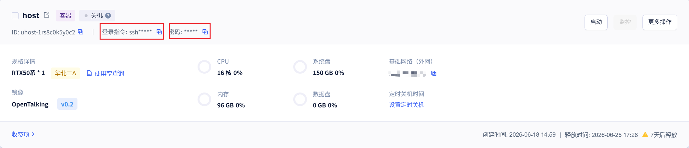
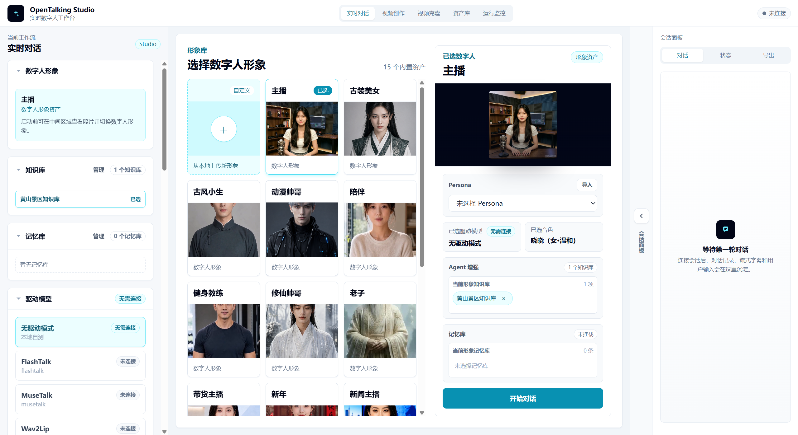
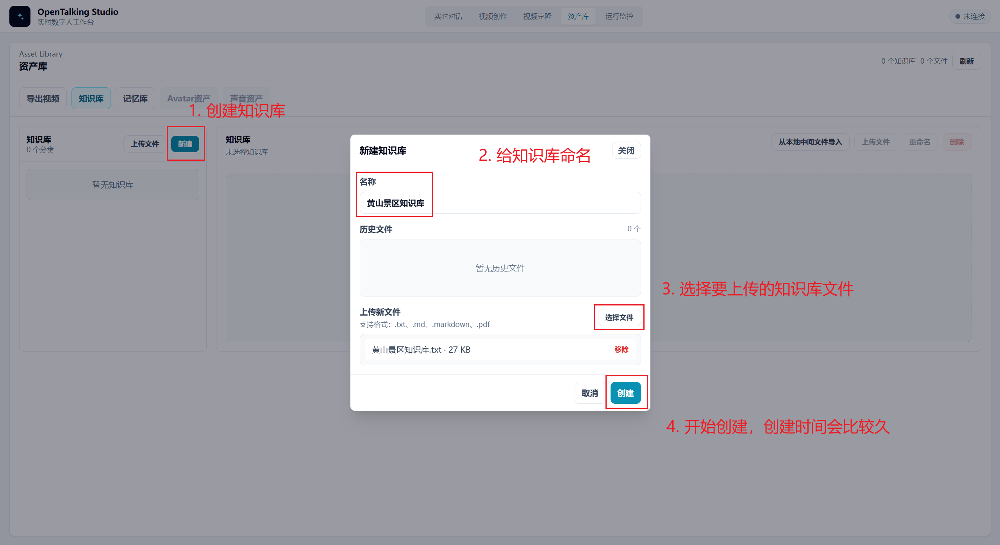
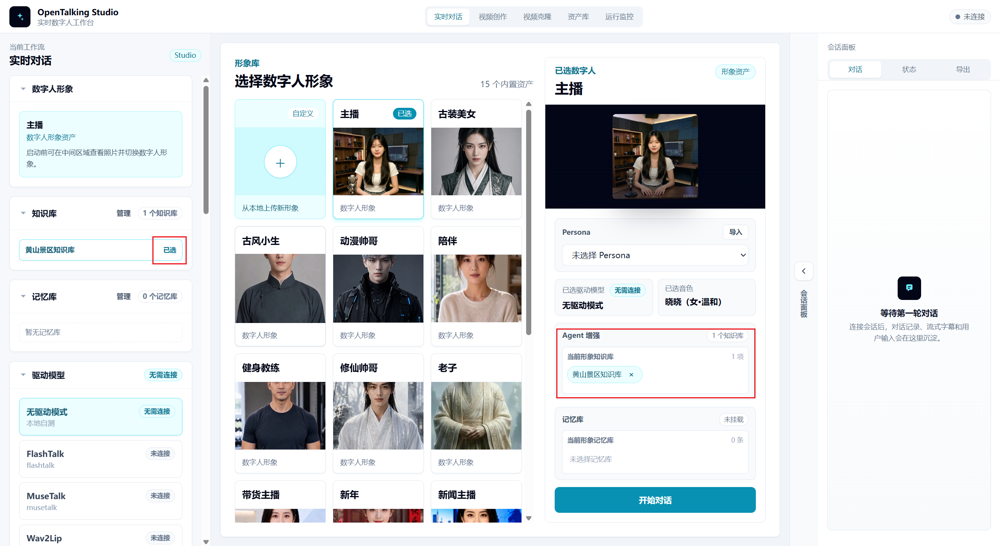
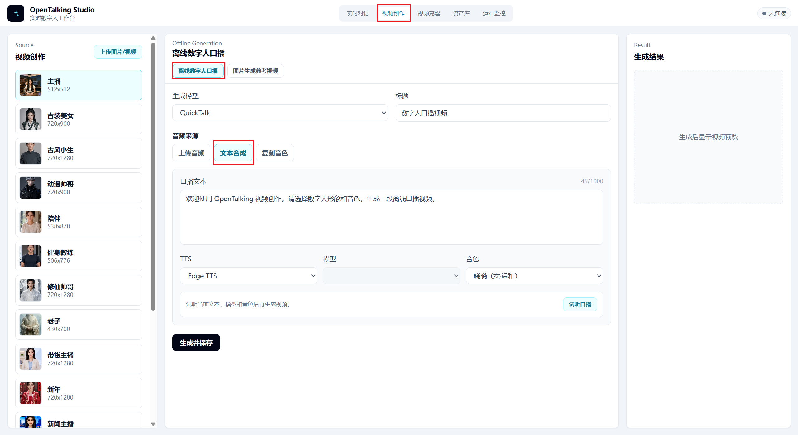
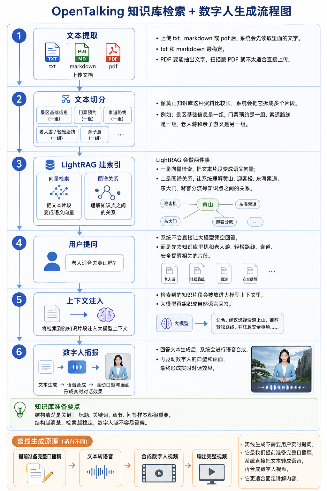

OpenTalking Huangshan Scenic Area Knowledge Digital Human Operation Guide¶
This guide helps new users work with an OpenTalking service that has already been deployed from the image, and build a Huangshan Scenic Area knowledge digital human for two tasks:
- Realtime conversation: visitors ask questions, and the digital human answers from the Huangshan Scenic Area knowledge base.
- Offline generation: prepare a narration script in advance and generate a Huangshan Scenic Area explainer video.
1. Prepare the Knowledge Base Text¶
Before starting OpenTalking, prepare the knowledge base text. A knowledge base is not just a page dump copied into one file. It should be organized so the digital human can retrieve, understand, and answer from it reliably.
OpenTalking splits and indexes the knowledge base text. When a user asks a question, OpenTalking retrieves the related content and passes it to the language model to compose the answer. If the knowledge base is disorganized, similar information is scattered, or time-sensitive details are unclear, the digital human may answer the wrong question, miss important points, or treat outdated information as current.
1.1 Why Structure the Knowledge Base This Way¶
Using Huangshan Scenic Area Knowledge Base.txt as the reference structure, start with metadata, then scenario-based sections, and finally sample Q&A. This design has several advantages:
Document title,Document type,Updated at, andScopetell the digital human what the document is for, which questions it should answer, and how fresh the information is.Sources and validity notesprevent the digital human from making overly absolute claims about ticketing, opening hours, cableway operations, and discount policies that may change.Topic categoriesandKeywordscover different terms visitors may use, such as "Huangshan", "Huangshan Scenic Area", "Guest-Greeting Pine", "Yungu Cableway", and "South Gate", improving retrieval coverage.- Scenario-based sections work better for visitor Q&A than content grouped by source. Visitors usually ask how to tour, how to buy tickets, which gate to enter, or whether the route works for older visitors, so the sections should follow those questions.
Knowledge base Q&A samplesgive the digital human a reference answer style, so responses sound like visitor-facing explanations instead of stiff excerpts.
1.2 Recommended Knowledge Base Framework¶
The Huangshan Scenic Area knowledge base uses a "metadata + scenario sections + Q&A samples" structure. You can reuse this framework for other scenic areas, museums, or exhibition halls:
Knowledge base name
Document title
Write the formal name of this knowledge base.
Document type
For example: scenic area digital-human Q&A material / scenic area narration material / visitor-service knowledge base.
Updated at
Write the date when the material was prepared or last verified.
Scope
Describe where this knowledge base is used, such as realtime conversation, visitor consultation, or offline explainer videos.
Topic categories
Use several short phrases to describe the domain of the knowledge base.
Keywords
List the scenic area name, core attractions, entrances, transport modes, signature landscapes, and common question terms.
Summary
Use one or two paragraphs to summarize the main coverage.
Sources and validity notes
Describe the material sources and mark which content must defer to official realtime notices.
Chapter 1 Basic scenic area information
Introduce the overview, location, core features, honors, and visitor perception.
Chapter 2 Opening hours, reservation, and ticketing
Organize opening hours, reservation method, ticket prices, discount policies, and validity reminders.
Chapter 3 Entrances and transport
Organize external transport, main entrances, transfer methods, parking, and entry directions.
Chapter 4 Cableways and tour routes
Organize cableways, hiking routes, one-day tours, two-day tours, and easier routes.
Chapter 5 Core attraction explanations
Organize the attractions visitors care about most and that are most suitable for digital-human explanation.
Chapter 6 Tour suggestions for different groups
Give suggestions for older visitors, children, families, photographers, hikers, and first-time visitors.
Chapter 7 Seasons, weather, and best visiting time
Organize seasonal highlights, sunrise, sea of clouds, rain and snow conditions, and safety reminders.
Chapter 8 Visitor facilities and notices
Organize consultation phone numbers, restrooms, rest stops, luggage, civilized travel, and emergency services.
Knowledge base Q&A samples
Add frequent questions and recommended answer styles using "Q:" and "A:".
1.3 How to Design Your Own Knowledge Base Text¶
First, decide who the digital human serves. For a Huangshan Scenic Area digital human, the users are visitors, so the knowledge base should be organized around common visitor questions instead of mixing scenic-area introductions, press releases, and travel guide text.
Second, list high-frequency visitor questions. Start from questions such as what the scenic area is, what its highlights are, how to buy tickets, how to enter the mountain, how to choose an easier route, whether older visitors and children can visit, what to do in bad weather, and who to contact when something happens.
Third, organize the material into sections. Each section should solve one type of problem. Put similar information together. For example, ticket prices, reservations, and discount policies all belong under "Opening hours, reservation, and ticketing"; cableways, hiking paths, and easy routes all belong under "Cableways and tour routes".
Fourth, write natural-language paragraphs that are easy to retrieve. Each paragraph should focus on one topic. Avoid putting too many unrelated details into one paragraph. Use clear headings, complete sentences, and avoid abbreviations only internal staff understand.
Fifth, mark time-sensitive information separately. Opening hours, ticket prices, cableway operations, discounts, weather restrictions, and temporary closures may change. The text should clearly say that official realtime announcements or reservation pages take precedence.
Sixth, add sample Q&A. The samples do not need to cover every question, but they should cover the most common and error-prone topics, such as ticket prices, older-visitor routes, route recommendations, bad weather, and safety reminders.
1.4 Text Input Suggestions¶
Use .txt or .md for the knowledge base file. PDF can also be uploaded if text extraction works. Scanned image-only PDFs are not recommended.
The upload API has a hard limit of 20MB per file. In practice, avoid making one file too long. Keep a single knowledge base text within about 50,000 Chinese characters when possible. If there is a lot of material, split it by topic, such as "basic scenic area information", "tickets and transport", "route explanations", and "visitor Q&A".
Use clear headings and complete sentences. Avoid only uploading tables, links, or loose keywords. The quality of the digital-human answers depends heavily on whether the knowledge base itself is clear, accurate, and systematic.
2. Start the OpenTalking Image on the Server¶
See OpenTalking image deployment guide.
3. Use an SSH Tunnel to Map the Compshare Instance Port to Your Local Machine¶
The OpenTalking image runs inside a Compshare deployment instance. The OpenTalking service in the instance usually listens on the instance-local 127.0.0.1:5173. That address is only valid inside the instance, so your local browser cannot open it directly. Use an SSH tunnel to map the OpenTalking service port inside the Compshare instance to a local port on your machine, then open it in your local browser.
Pay attention to two fields on the Compshare instance card:

- Login command: click the copy button on the right to copy the SSH login command.
- Password: click the copy button on the right to copy the instance login password.
3.1 Copy the Instance Login Command¶
Find the running OpenTalking instance in the Compshare console. Confirm that the image is OpenTalking v0.2 and that the instance is running.
Click the copy button next to the login command on the instance card. The copied command usually looks like this:
Use the actual <instance public address> and <SSH port> copied from your console.
3.2 Add Port Forwarding Parameters¶
Open a new local PowerShell window and convert the copied SSH login command into an SSH tunnel command.
If the OpenTalking service inside the instance uses port 5173, and you also use local port 5173, the command format is:
In other words, add -N -L 5173:127.0.0.1:5173 after ssh in the original login command.
If the copied login command is:
Change it to:
Command meaning:
- Your local machine accesses
127.0.0.1:5173. - SSH forwards the request to
127.0.0.1:5173inside the Compshare instance. - The first
5173is the local port. - The second
5173is the OpenTalking service port inside the instance. -Nmeans only create the tunnel and do not enter a remote shell.- Keep this PowerShell window open. Closing it disconnects the tunnel.
After running the command, if PowerShell asks for a password, paste the password copied from the Compshare instance card and press Enter. Password input is usually invisible in the terminal; this is normal.
After the tunnel is established, open this address in your local browser:
3.3 If Local Port 5173 Is Already in Use¶
If another local program already uses 5173, use local port 15173 instead while keeping the instance-side service port as 5173:
If the copied login command is:
Change it to:
Then open:
In this case the browser uses local port 15173, but SSH still forwards to instance port 5173.
3.4 Check Whether the SSH Tunnel Works¶
Run this in local PowerShell:
If you use the alternate local port 15173, run:
If the command returns page content or a service response, port mapping is working.
If access fails, check these items in order:
- The Compshare instance is running.
- The OpenTalking image service has started inside the instance.
- The PowerShell window running the SSH tunnel is still open.
- The instance address, username, and SSH port in the login command are correct.
- You used the password from the instance card.
- The actual image service port is
5173. - The browser port matches the first port in the tunnel command, such as
5173or15173.
4. Open the OpenTalking Page¶
After the tunnel is established, open:
If you use the alternate local port:

5. Upload the Huangshan Scenic Area Knowledge Base¶
After entering the page, open the Knowledge Base page under the asset library.

Create a knowledge base:
Upload Huangshan Scenic Area Knowledge Base.txt.
After upload finishes, check whether the file status is normal. If the status is normal, the system has finished reading the text and can use it for later retrieval.
Notes:
- OpenTalking knowledge bases support
.txt,.md,.markdown, and.pdf. - The upload API has a hard limit of
20MBper file. - In practice, keep a single file within about
50,000 Chinese characterswhen possible. - PDF files must allow text extraction. Scanned image-only PDFs are not recommended.
- Opening hours, ticket prices, cableway operations, and discount policies are time-sensitive. The knowledge base should remind users to follow official realtime announcements.
6. Bind the Knowledge Base to Realtime Conversation¶
Open the realtime conversation page.
Choose a digital-human avatar or role.
Select the knowledge base in the session configuration:

Uploading the knowledge base alone is not enough. You must bind it to the current session or current digital-human role. Otherwise, the digital human may not use this material.
7. Test Realtime Conversation¶
You can now start realtime conversation. Ask scenic-area questions, and the digital human will retrieve from the knowledge base before answering.
8. Prepare an Offline Narration Script¶
Offline generation is used for fixed videos, such as scenic-area promotional clips, visitor-center loop videos, or exhibition-hall explainers.
Start with a short 100-300 Chinese character script for testing.
Example narration script:
Welcome to Huangshan Scenic Area. Huangshan is located in Huangshan City, Anhui Province, and is one of China's representative mountain scenic areas. It is famous for the five wonders of unusual pines, grotesque rocks, sea of clouds, hot springs, and winter snow. First-time visitors can enter from the South Gate, take the Yungu Cableway up the mountain, and visit Shixin Peak, the Beihai Scenic Area, Bright Summit, Tianhai, and the Guest-Greeting Pine. If you have enough time, you can also arrange a two-day, one-night visit to enjoy the sunrise, sea of clouds, and the magnificent West Sea Grand Canyon. During the tour, pay attention to weather changes, enter according to your reservation direction, and choose a route that fits your physical condition.
9. Generate an Offline Digital-Human Explainer Video¶
Open the offline generation page.

Operate in order:
- Choose a digital-human avatar.
- Choose a voice.
- Paste the Huangshan Scenic Area narration script.
- Click generate.
- Wait for generation to finish.
- Preview the video.
- Export the result.
For the first test, use a short script. After confirming that the voice, lip motion, video frame, and export result are normal, split longer scripts into segments and generate them separately.
10. How It Works¶

The Huangshan Scenic Area knowledge digital human mainly contains three flows.
The first is the knowledge base flow:
Upload document -> text extraction -> text chunking -> LightRAG indexing -> user question -> retrieve related chunks -> inject into the language model -> generate answer
After uploading Huangshan Scenic Area Knowledge Base.txt, the system first reads the text content. It then splits long material into chunks, such as basic scenic area information, ticket reservation, entrances and transport, cableways and routes, core attractions, and group-specific suggestions.
LightRAG then indexes these chunks. It converts text chunks into semantic vectors for semantic retrieval, and it also uses entity and relationship information to help the system understand connections among knowledge points such as Huangshan, Guest-Greeting Pine, East Sea Cableway, East Gate, and older-visitor routes.
When visitors ask questions, the system does not ask the language model to answer from nothing. It first retrieves related chunks from the knowledge base. The retrieval results are passed to the language model as context, and the model generates a natural-language answer.
The second is the realtime conversation flow:
User question -> language model response -> TTS speech synthesis -> digital-human video and lip motion -> realtime playback
The key part of realtime conversation is answer quality. During testing, focus on whether the digital human answers according to the knowledge base.
The third is the offline generation flow:
Offline generation does not require realtime user questions. You prepare a complete script first, so it is suitable for fixed content production.
11. Troubleshooting¶
Page cannot open:
- Check whether the Docker container is running.
- Check whether the server service port is correct.
- Check whether the SSH tunnel is still running.
- Check whether the browser is using the mapped local port, such as
http://127.0.0.1:5173.
Knowledge base upload fails:
- Check whether the file format is
.txt,.md,.markdown, or.pdf. - Check whether the file exceeds
20MB. - Check whether the PDF allows text extraction.
- Check whether the filename and content encoding are normal.
Digital-human answers are too generic:
- Check whether the current session is bound to the Huangshan Scenic Area Knowledge Base.
- Check whether the knowledge base file status is normal.
- Check whether the question is too vague.
- Check whether the knowledge base contains the relevant content.
Ticket or opening-hour answers are uncertain:
- This is normal because this information is time-sensitive.
- The digital human should remind visitors to follow the official Huangshan tourism platform and scenic-area notices for that day.
Offline generation quality is not ideal:
- Test with a short
100-300 Chinese characterscript first. - Check whether the script sentences are too long.
- Split long scripts into multiple segments.
- Avoid entering overly long text in one generation.
12. New-User Checklist¶
After finishing the operation, confirm each item:
- The instance is running.
- There are no obvious errors in logs.
- The SSH tunnel is established.
- The local browser can open the OpenTalking page.
Huangshan Scenic Area Knowledge Base.txthas been uploaded.- The realtime conversation session is bound to the Huangshan Scenic Area Knowledge Base.
- The digital human can answer questions about Huangshan routes, attractions, tickets, and older-visitor routes.
- Offline generation with a short narration script succeeds.
- The video can be previewed and exported.